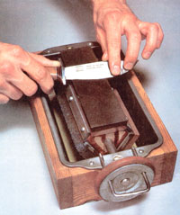
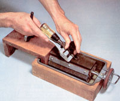
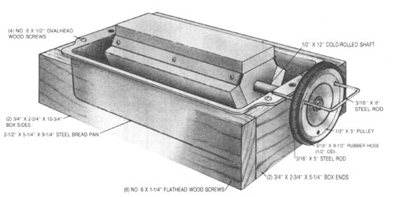

A Three-Stone Sharpener
Maintenance is a must for your fine knives and blades and is made easier by building this device, including diagram, directions.
By the Mother Earth News editors
July/August 1985
Maintenance is a must for your fine knives and tool blades; make it easy with . . .
To a person accustomed to working with cutting tools, a sharp edgeS is one of life's little pleasures. And few whetstone wielders would deny that the triple-face sharpener shown here is a great new twist on an old grind.
To begin with, the tool is sturdy yet compact, which is a welcome combination in a work area where space is at a premium. In addition, its multiple-stone arbor provides coarse, medium, or fine honing surfaces at the turn of a handle and secures each one in position with a simple horseshoe pin clamp. Furthermore, the arbor rests in an oil- or water-filled pan that continually bathes the two unused stones in their appropriate lubricating medium. If you wish, you can also make a protective cover that doubles as a ramp for use with the roller-type chisel- and plane-blade sharpening guides popular with many woodworkers.
If you think you might like to give this inexpensive multiple-stone hone a try, you'll need to gather up a 32" length of 1 X 4, a piece of 3/4" plywood or one-by that's at least 4-1/4" wide and about 14" long, a block of hardwood measuring 2" X 2" X 3", a 1/2" X 12" steel shaft, a 3/32" X 1-1/2" expansion pin, a 1/2"-bore, 3"-diameter pulley, a 3/16" X 13" steel rod, a 1/2" X 9-1/2" rubber hose with a 3/16" orifice, a 1/8" X 3/4" X 20-1/4" piece of aluminum flat stock, a 2-1/2"-deep, 5-1/4" X 9-1/4" bread pan, three 3/4" X 2" X 7" sharpening stones in your choice of composition and grade, and the assorted fastening hardware called for in our illustration.
The box is easily made by first ripping the 1 X 4 down to 2-3/4" in width, then cutting it into two 5-1/4" and two 10-3/4" pieces. Drill a 1/2" hole, centered and 3/8" below one edge of each of the shorter boards, then fasten the box sides to the ends using eight No. 6 X 1-1/4" flathead wood screws. (Take the time to countersink the heads and fill the holes, too.)
Next, push the pan firmly into the frame and mark the positions for the holes that will receive the arbor shaft, using the 1/2" bores in the ends as guides. Remove the pan to drill the openings, then set it back in place and secure it to the box with four No. 6 X 1 /2" wood screws fastened through the rim lip.
To make the arbor, you'll first need to cut the hardwood block into an equilateral triangle with 1/2"-wide flats instead of corners. Then, by carefully dividing lines struck between the centers of each opposite flat surface, you can determine the exact center of the block and bore it longitudinally with a 1/2" Forstner or auger bit. With this done, cut the piece into three 1 "-wide sections to make a set of triangles.
Before you install the blocks, slide one of them onto the shaft until it's at a point that will correspond with the center of the bread pan when the arbor's in place. Then drill a 3/32" hole through a wide flat, the middle of the rod, and part of the block behind it. Remove the wood, and slip the shaft into the holes in the frame and pan, sliding the blocks on as you go and making certain the drilled piece is in the center.
Once the shaft is positioned in the frame, cut your aluminum stock into three equal pieces and arrange the blocks so the middle one is lined up with the hole in the axle and the end sections are centered about 6" apart. Tap the expansion pin into the cross-bored socket, then turn the other two blocks so the flats are in line. Set an aluminum strip on one row of narrow flats and drill 3/32" pilot holes through the metal and into the wood. Enlarge the openings in the strip, insert the aluminum screws, then repeat this procedure on the other two rows.
To fasten the stones in place, simply lay them on the broad flats and tighten the strips so their edges catch the lower shoulders of each stone. (You may need another pair of hands to accomplish this.) If you plan on using stones larger or smaller than the ones we chose, you'll have to adjust the size of your hardwood triangles accordingly, and perhaps that of the strips as well . . . but the method of securing the abrasives will remain the same.
At this point, you can attach the pulley to the exposed end of the arbor shaft and mark the location of the three 7/32" holes that hold the horseshoe clamp. These should be drilled equidistant from one another so that any pair will be even with the top of the pan as the pulley is rotated into position. Cut an 8" piece from the 3/16" X 13" steel rod and bend it into a U shape with a spread to match the holes, taper the rod's tips, then reorient the pulley on the shaft so the clamp and one of the stones are on the same plane. You can make a simple grip by bending the leftover section of rod into an arc and using it to join the ends of the rubber hose to form a loop around the pulley groove.
The sharpening guide ramp is assembled with basic butt joints. First cut your 4-1/4"wide 3/4" board into 1-5/8", 3-1/4", and 8-1/2" lengths, then use a coping saw to make 1/2"-wide slots in the center of the legs . . . 1" deep in the shorter piece, and 3" deep in the longer one. (You can terminate the cuts by predrilling a 1/2" hole at the top of each slot.) Attach the platform to the legs with No. 6 X 1-1/4" flathead wood screws, fill the holes, and check to make sure the surface is flush and even with the stones when the ramp is in place. With that assured, coat the tool's wooden parts with varnish or polyurethane to provide a working finish.
Perhaps one of the nicest features of this bench tool is that when it's filled with an inch or so of oil or water lubricant, it's heavy enough to stay put without being clamped . . . and its reservoir keeps the stones moist for instant use when needed. But its primary value is that it provides a convenient method of maintaining a variety of cutting edges, a workshop chore that's all too often neglected.
|
 |
 |
 |
 |
|
|